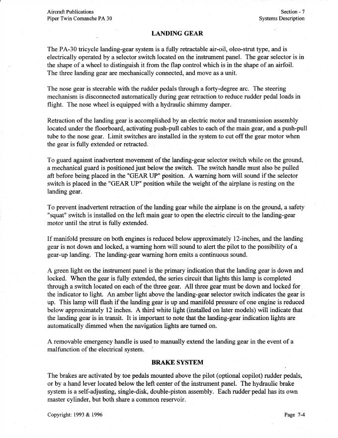
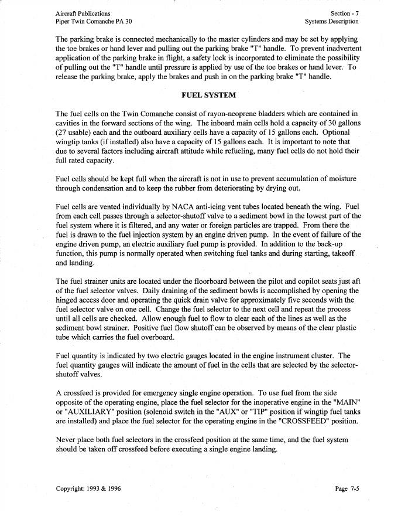
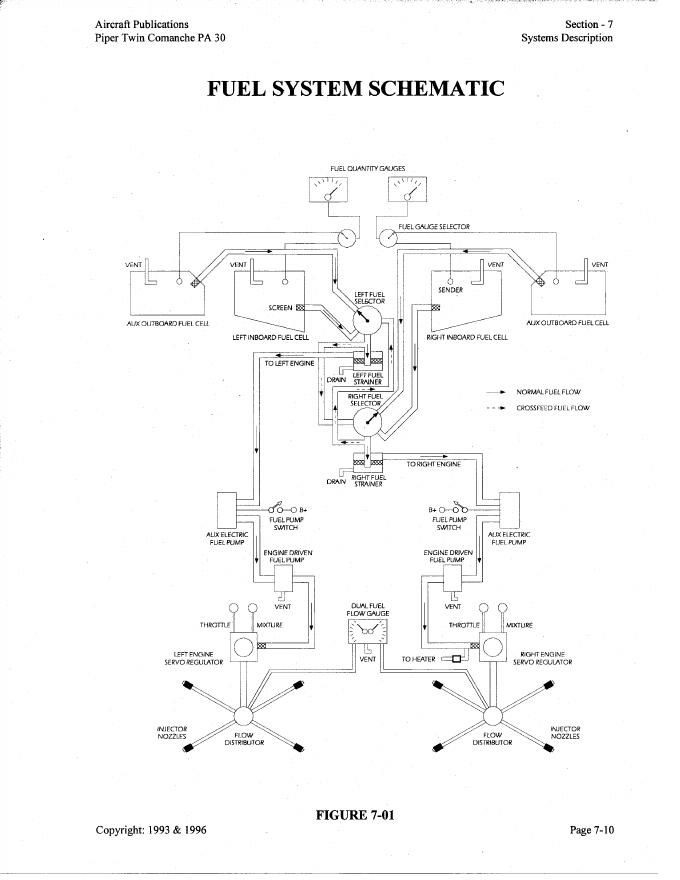
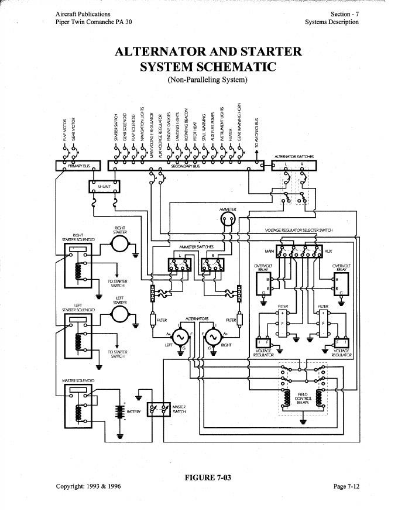
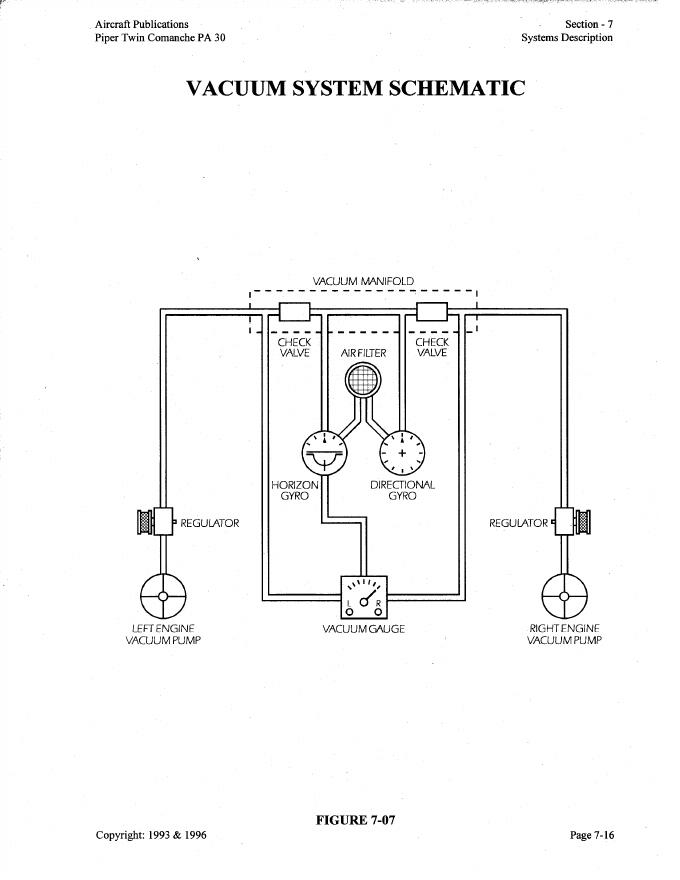
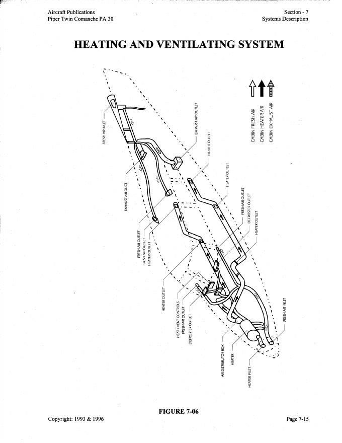
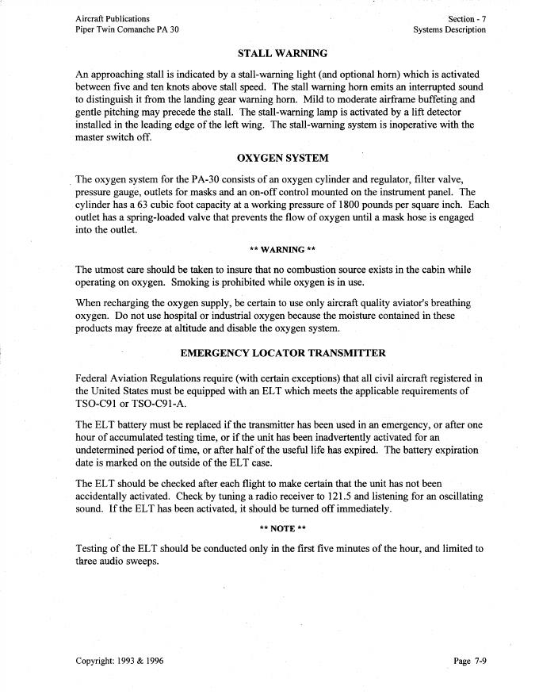

Interactive PA-30 systems study
Every system below now has a visual flow, normal-operation controls, and a failure mode so a student can see what changes rather than just read about it.
Landing Gear — Normal Operation & Reversible Drive
Main topic points
- Electrically operated retractable tricycle gear; all three gear move as one mechanically connected system.
- Electric motor and transmission drive push-pull cables/tube for normal extension and retraction.
- Left-main squat switch prevents normal retraction while weight is on the gear.
- End-of-travel limit switches remove motor power when fully extended or retracted.
- Gear warning horn logic is tied to gear position and low manifold pressure; this airplane is taught with its actual UP/DOWN indication arrangement.
- Manual extension uses the removable emergency handle after disengaging the motor mechanism.
How it works
What to teach
- Electric motor/transmission provides normal motion.
- The transmission mechanically moves all three gear.
- Motor direction reverses for extension vs retraction in this teaching model.
- Left-main squat switch inhibits normal retraction on the ground.
- Limit-switch logic stops the motor at end of travel.
Manual Extension Practice
POH Landing-Gear Reference
The supplied PA-30 POH describes the gear mechanism in text but does not provide a dedicated mechanism schematic in this systems section. The interactive gear animation above therefore remains the visual trainer, and the source pages are placed here at the bottom for direct comparison.


Engine / Induction — Visual Flow
Main topic points
- Two normally aspirated Lycoming IO-320-B-series engines; baseline POH rating is 160 HP each at 2700 RPM.
- Four-cylinder, direct-drive, wet-sump, horizontally opposed and air-cooled.
- Dual magnetos provide ignition independently of the aircraft electrical system once the engine is turning.
- Engine-driven fuel pumps supply the fuel-injection system; the POH also identifies dual vacuum pumps among engine accessories.
- Cowl flaps control cooling airflow and are manually operated.
- Induction air normally passes through a filter; a spring-loaded alternate-air door can open if the filter is blocked.
How it works
Fuel Injection — Bendix RSA-Type Teaching Model
Main topic points
- POH identifies a Bendix self-purging servo-regulator metering system.
- Fuel metering is coordinated with engine airflow.
- Manual mixture control includes idle cutoff.
- Fuel-flow indication is provided on the instrument panel.
- Abnormally high or increasing fuel-flow indication can be a symptom of restricted injector lines/nozzles.
- Fuel is distributed through the flow divider to individual cylinder injector nozzles.
How it works
Lycoming's IO-320 operator's manual states that the IO-320 uses a Bendix-type RSA injector. It measures airflow, converts that airflow signal into a fuel-metering force, and schedules fuel flow proportional to airflow; fuel vaporization occurs at the intake ports.
Failure visualization
A restricted nozzle can produce roughness or a cold cylinder; Lycoming notes clogged nozzles may also be associated with uneven idle or unusually high fuel-flow indication. This page is a systems-learning model, not a maintenance diagnostic procedure.
Fuel Injection in the Actual POH Fuel Schematic
Figure 7-01 is reused here because the POH places the servo regulators, flow distributors and injector nozzles directly in the fuel-system schematic. Green arrows emphasize the metered-fuel path into each engine.

×Fuel System — Visual Flow (No Tip Tanks)
Main topic points
- No tip tanks in this airplane: use the inboard MAIN and outboard AUX bladder cells shown in Figure 7-01.
- Each inboard main cell is 30 gal / 27 usable; each outboard auxiliary cell is 15 gal.
- Each cell is individually vented; selected fuel goes through selector/shutoff valve and sediment bowl/strainer.
- Engine-driven pump is the normal pressure source; an electric auxiliary pump is provided for backup and POH-specified operations.
- Fuel gauges indicate the cells selected by the selector-shutoff valves.
- Crossfeed is provided for emergency single-engine operation; never place both selectors in crossfeed simultaneously.
How it works
Interactive POH Schematic — Figure 7-01 Fuel System
This is the actual PA-30 POH fuel-system drawing. The arrows are placed over the POH flow paths; your controls above change this same diagram.
Electrical — Source / Bus / Load Visual
Main topic points
- For the C-model configuration in this POH: 12-volt DC, negative-ground system.
- Primary power is from dual 12-volt, 70-amp alternators protected by overvoltage relays.
- Secondary power is a 12-volt, 35-amp-hour battery for starting and reserve after alternator failure.
- Master/electrical switches and circuit breakers control and protect the system.
- Loss of both alternators leaves finite battery endurance.
- Magneto ignition is not dependent on the aircraft DC system once the engines are running.
How it works
Interactive POH Schematic — Figure 7-03 Alternator & Starter System
This is the actual C-model POH electrical schematic. Blue arrows highlight generating-current paths. Toggle either alternator above to place a failure X directly over the alternator in the POH figure.

× ×Pitot-Static — Pressure Routing Visual
Main topic points
- Airspeed uses both pitot (total) pressure and static pressure.
- Altimeter and VSI use static pressure.
- Pitot blockage and static blockage produce different instrument-error patterns.
- The available PA-30 systems pages do not show a dedicated pitot-static plumbing schematic, so the flow trainer is a POH-compatible teaching model rather than a traced maintenance diagram.
- Teach the actual airplane's installed pitot heat and alternate-static equipment from its placards/supplements.
How it works
Vacuum / Gyro — Source Failure Visual
Main topic points
- Two engine-driven vacuum pumps are shown in the POH system.
- Each pump has its own vacuum relief valve with filter; the system also has an inlet-air filter and suction gauge.
- A check valve closes if one pump loses suction so the remaining pump can supply the system.
- A mechanical warning indicator identifies which pump has failed.
- POH states the vacuum regulator is adjusted to a normal reading of about 5.0 inHg with the stated tolerance.
- Vacuum operates the attitude and directional gyros in the baseline panel description.
How it works
Interactive POH Schematic — Figure 7-07 Vacuum System
This is the actual POH vacuum schematic. Purple arrows show suction-system flow. Fail either pump above and watch that pump get crossed out while its POH check valve is shown closing.

× ×Heat / Ventilation — Airflow Visual
Main topic points
- Cabin heater installation depends on serial/model: early airplanes may use Southwind; later models use Janitrol.
- Heater uses gasoline supplied from the right-engine fuel system in the POH description.
- Airflow controls direct heated/ventilating air to front and rear cabin.
- A temperature-limit switch overrides heater operation if excessive temperature occurs.
- Southwind shutdown includes fan purge/cool-down; the Janitrol description states no purge is required.
- Exact installed heater type must be identified before teaching switch positions or shutdown procedure.
How it works
Interactive POH Diagram — Figure 7-06 Heating & Ventilating System
This is the actual POH duct layout. Gold arrows follow heated-air paths and blue arrows represent ventilation/fresh-air flow. The controls above change the overlay.

×Stall Warning — Lift Detector Visual
Main topic points
- Stall-warning light, with optional horn, activates about 5–10 knots above stall speed.
- Warning horn is intermittent to distinguish it from the landing-gear warning horn.
- Lift detector is installed in the leading edge of the left wing.
- System is inoperative with the master switch OFF.
- Mild to moderate buffet and gentle pitching may also precede the stall.
How it works
POH Source — Stall Warning
No dedicated stall-warning wiring schematic is provided in this section, so the interactive model above is based on the POH text. The source page is shown below.

Hydraulic Brakes — Pressure Flow Visual
Main topic points
- Hydraulic brakes are operated by toe pedals and, as described in the POH, a hand lever.
- System uses self-adjusting single-disc, double-piston brake assemblies.
- Each rudder pedal has its own master cylinder; both share a common reservoir.
- Parking brake is mechanically connected to the master cylinders.
- Safety lock prevents pulling the parking-brake T-handle until brake pressure has been applied.
- To release the parking brake, apply brakes and push the T-handle in.